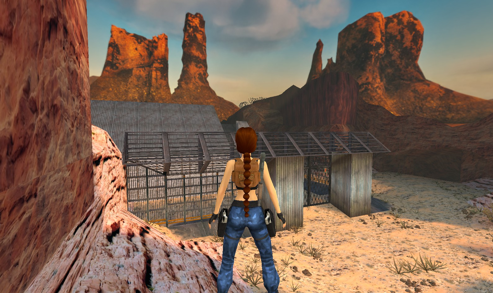

TR3RApplication
Temple Ruins
Mudslide
Climb the mudslide using the prepared crouch and slide-load sequence. Published guide and recordings available.
Published reproduction
Remastered · Reproduce & understand
Tomb Raider 3 Remastered · Applications
Level-specific routes with the setup, inputs and expected result.
2 results
Temple Ruins
Climb the mudslide using the prepared crouch and slide-load sequence. Published guide and recordings available.
Published reproduction

TR3RApplicationNevada Desert
Create the slope save, follow the keyboard-only Setup and complete the slide/load transition. Screenshots cover every step and the final upper-platform result.
Setup approved · video and step screenshots available
No matching guides. Try a different term or clear the filters.